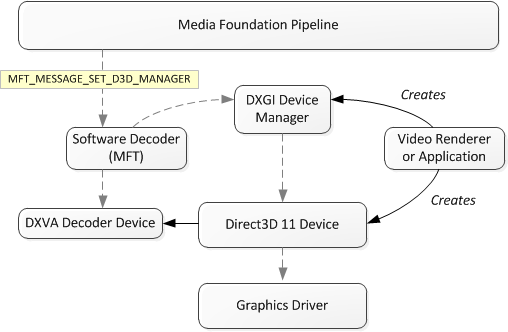

description: This topic describes how to support Microsoft Direct3DÂ 11 in a Microsoft Media Foundation decoder.
ms.assetid: 656556AA-0266-4318-9D3C-AED75BD728F6
title: Supporting Direct3D 11 Video Decoding in Media Foundation
ms.topic: article
ms.date: 05/31/2018
Supporting Direct3D 11 Video Decoding in Media Foundation
This topic describes how to support Microsoft Direct3DÂ 11 in a Microsoft Media Foundation decoder. Specifically, it describes the communication between the decoder and the video renderer. This topic does not describe how to implement the decoding operations.
Overview
In the remainder of this topic, the following terms are used:
- Software decoder. The software decoder is the Media Foundation transform (MFT) that receives compressed video samples and outputs uncompressed video frames.
- Decoder device. The decoder device is the video accelerator, and is implemented by the graphics driver. The decoder device performs accelerated decoding operations.
- Pipeline. The pipeline hosts the software decoder and delivers buffers to and from the software decoder. Depending on the application, the pipeline might be the Media Session, the Source Reader, or application code that directly calls into the MFT.
To perform decoding using Direct3DÂ 11, the software decoder must have a pointer to a Direct3DÂ 11 device. The Direct3DÂ 11 device is created externally to the software decoder. In a Media Session scenario, the video renderer creates the Direct3DÂ 11 device. In a Source Reader scenario, typically the application creates the Direct3DÂ 11 device.
The DXGI Device Manager is used to share the Direct3DÂ 11 between components. The DXGI Device Manager exposes the IMFDXGIDeviceManager interface. The pipeline sets the IMFDXGIDeviceManager pointer on the software decoder by sending the MFT_MESSAGE_SET_D3D_MANAGER message.
The following diagram shows the relation between the software decoder, the Direct3DÂ 11, and the pipeline.

Here are the basic steps that a software decoder must perform to support Direct3DÂ 11 in Media Foundation:
- Open a handle to the Direct3DÂ 11 device.
- Find a decoder configuration.
- Allocate uncompressed buffers.
- Decode frames.
These steps are described in more detail in the remainder of this topic.
Open a Device Handle
The decoder MFT uses the DXGI device manager to get a handle to the Direct3DÂ 11 device. To open the device handle, perform the following steps:
- The decoder MFT must expose the MF_SA_D3D11_AWARE attribute with the value TRUE.
- The Topology Loader queries this attribute by calling IMFTransform::GetAttributes. The value TRUE indicates that the MFT supports Direct3DÂ 11.
- The Topology Loader calls IMFTransform::ProcessMessage with the MFT_MESSAGE_SET_D3D_MANAGER message. The ulParam parameter is an IUnknown pointer to the DXGI device manager. Query this pointer for the IMFDXGIDeviceManager interface.
- Call IMFDXGIDeviceManager::OpenDeviceHandle to get a handle to the Direct3DÂ 11 device.
- To get a pointer to the Direct3DÂ 11 device, call IMFDXGIDeviceManager::GetVideoService. Pass in the device handle and the value IID_ID3D11Device. The method returns a pointer to the ID3D11Device interface.
- To get a pointer to the video accelerator, call IMFDXGIDeviceManager::GetVideoService again. This time, pass in the device handle and the value IID_ID3D11VideoDevice. The method returns a pointer to the ID3D11VideoDevice interface.
- Call ID3D11Device::GetImmediateContext to get an ID3D11DeviceContext pointer.
- Call QueryInterface on the ID3D11DeviceContext to get an ID3D11VideoContext pointer.
- It is recommended that you use multi-thread protection on the device context to prevent deadlock issues that can sometimes happen when you call ID3D11VideoContext::GetDecoderBuffer or ID3D11VideoContext::ReleaseDecoderBuffer. To set multi-thread protection, first call QueryInterface on ID3D11Device to get an ID3D10Multithread pointer. Then call ID3D10Multithread::SetMultithreadProtected, passing in true for bMTProtect.
Find a Decoder Configuration
To perform decoding, the software decoder must find a compatible configuration that is supported by the decoder device, including a render-target format. This step occurs inside the IMFTransform::SetInputType method, as follows.
- Validate the input media type. If the type is rejected, skip the remaining steps and return an error code.
- Call ID3D11VideoDevice::GetVideoDecoderProfileCount to get the number of supported profiles.
- Call ID3D11VideoDevice::GetVideoDecoderProfile to enumerate the profiles and get the profile GUIDs.
- Look for a profile GUID that matches the video format and the capabilities of the software decoder. For example, an MPEG-2 decoder would look for D3D11_DECODER_PROFILE_MPEG2_MOCOMP,D3D11_DECODER_PROFILE_MPEG2_IDCT, and D3D11_DECODER_PROFILE_MPEG2_VLD.
- If a suitable decoder GUID is found, check the output format by calling the ID3D11VideoDevice::CheckVideoDecoderFormat method. Pass in the decoder GUID and a DXGI_FORMAT value that specifies the render-target format.
- Next, find a suitable configuration for the decoder.
- Call ID3D11VideoDevice::GetVideoDecoderConfigCount to get the number of decoder configurations. Pass in the same decoder device GUID, along with a D3D11_VIDEO_DECODER_DESC structure that describes the proposed render-target format.
- Call ID3D11VideoDevice::GetVideoDecoderConfig to enumerate the decoder configurations.
In the IMFTransform::GetOutputAvailableType method, return an uncompressed video format based on the proposed render-target format.
In the IMFTransform::SetOutputType method, check the media type against the render target format.
Fallback to Software Decoding
The MFT might be unable to find a configuration. For example, the graphics driver might not support the right capabilities. In that case, the MFT must fall back to software decoding, as follows.
- The SetInputType and SetOutputType methods should both return MF_E_UNSUPPORTED_D3D_TYPE.
- In response, the Topology Loader will send the MFT_MESSAGE_SET_D3D_MANAGER message with the value NULL for the ulParam parameter.
- The MFT releases its pointer to the IMFDXGIDeviceManager interface.
- The Topology Loader renegotiates the media type.
At this point, the MFT can use software decoding.
Allocating Uncompressed Buffers
The decoder is responsible for allocating Direct3DÂ 11 textures to use as uncompressed video buffers. The MF_SA_MINIMUM_OUTPUT_SAMPLE_COUNT attribute in the output stream attributes (seeIMFTransform::GetOutputStreamAttributes) is used to determine how many surfaces the decoder should allocate for the video renderer to use for deinterlacing . A decoder should use this value bounding it for some reasonable upper and lower limits, for example 3-32. For progressive content see MF_SA_MINIMUM_OUTPUT_SAMPLE_COUNT_PROGRESSIVE.
In the IMFTransform::GetOutputStreamInfo method, set the MFT_OUTPUT_STREAM_PROVIDES_SAMPLES flag in the MFT_OUTPUT_STREAM_INFO structure. This flag notifies the Media Session that the MFT allocates its own output samples. To allocate the output samples, the MFT performs the following steps:
-
Create a 2D texture array by calling ID3D11Device::CreateTexture2D. In the D3D11_TEXTURE2D_DESC structure, set ArraySize equal to the number of surfaces that the decoder needs. This includes:
- Surfaces for reference frames.
- Surfaces for deinterlacing (three surfaces).
- Surfaces that the decoder needs for buffering.
The binding flags (BindFlags) should include the D3D11_BIND_DECODER flag and any bind flags set through the MF_SA_D3D11_BINDFLAGS attribute in the output stream attributes.
-
For each surface in the texture array, call ID3D11VideoDevice::CreateVideoDecoderOutputView to create a video decoder output view. During decoding, these output views will be passed to the ID3D11VideoContext::DecoderBeginFrame method.
-
For each surface in the texture array, create a media sample as follows:
- Create a DXGI media buffer by calling the MFCreateDXGISurfaceBuffer function. Pass in the ID3D11Texture2D pointer and the offset for each element in the texture array. The function returns an IMFMediaBuffer pointer.
- Create an empty media sample by calling the MFCreateVideoSampleFromSurface function. Set the pUnkSurface parameter equal to NULL. The function returns an IMFSample pointer.
- Call IMFSample::AddBuffer to add the media buffer to the sample.
You should destroy all the textures you create at the same time, rather than destroying only some and continuing to use the reminder.
Decoding
To create the decoder device, call ID3D11VideoDevice::CreateVideoDecoder. The method returns a pointer to the ID3D11VideoDecoder interface. Decoding should occur inside the IMFTransform::ProcessOutput method. On each frame, call IMFDXGIDeviceManager::TestDevice to test the availability of the DXGI. If the device has changed, the software decoder must recreate the decoder device, as follows:
- Close the device handle by calling IMFDXGIDeviceManager::CloseDeviceHandle.
- Release all resources associated with the previous Direct3DÂ 11 device, including the ID3D11VideoDecoder, ID3D11VideoContext, ID3D11Texture2D, and ID3D11VideoDecoderOutputView interfaces.
- Open a new device handle.
- Negotiate a new decoder configuration, as described previously in Find a Decoder Configuration. This step is necessary because the device capabilities might have changed.
- Create a new decoder device.
Assuming that the device handle is valid, the decoding process works as follows:
- Get an available surface that is not currently in use. Initially, all of the surfaces are available.
- Query the media sample for the IMFTrackedSample interface.
- Call IMFTrackedSample::SetAllocator and provide a pointer to the IMFAsyncCallback interface. (The software decoder must implement this interface.) When the video renderer releases the sample, the callback will be invoked. Use this callback to keep track of which samples are currently available and which are in use.
- Call ID3D11VideoContext::DecoderBeginFrame. Pass in the pointers to the ID3D11VideoDecoder interface for the decoder device and the ID3D11VideoDecoderOutputView interface for the output view.
- Do the following one or more times:
- Call ID3D11VideoContext::GetDecoderBuffer to get a buffer.
- Fill the buffer.
- Call ID3D11VideoContext::ReleaseDecoderBuffer.
- Call ID3D11VideoContext::SubmitDecoderBuffer. This method instructs the decoder device to perform the decoding operations on the frame.
- Call ID3D11VideoContext::DecoderEndFrame to signal the end of decoding for the current frame.
Direct3DÂ 11 uses the same data structures as DXVA 2.0 for decoding operations. For the original set of DXVA profiles (for H.261, H.263, and MPEG-2), these data structures are described in the DXVA 1.0 specification.
Within each pair of DecoderBeginFrame and SubmitDecoderBuffer calls, you may call GetDecoderBuffer multiple times, but only once for each type of buffer. If you use the same buffer type twice without calling SubmitDecoderBuffer, you will overwrite the data in the buffer.
Related topics
Direct3D 11 Video APIs
DirectX Video Acceleration 2.0
Â
Â